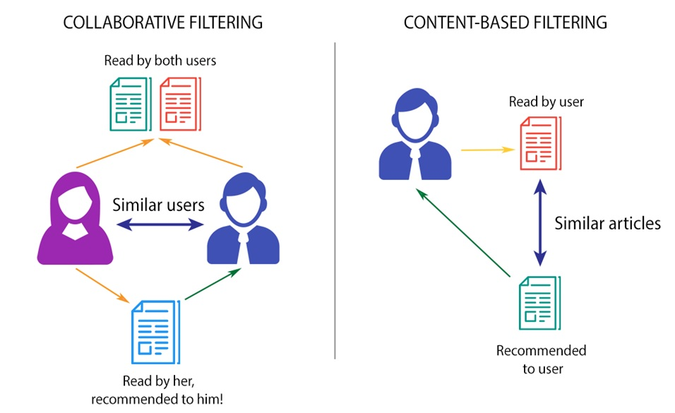

Recommender System is a system that seeks to predict or filter preferences according to the user’s choices.
They are utilized in a variety of areas, and are most commonly recognized as playlist generators for video and music services like Netflix, YouTube and Spotify, product recommenders for services such as Amazon, or content recommenders for social media platforms such as Facebook and Twitter.

Dataset that is taken describes 5-star rating and activity from [Movie Lens] (http://movielens.org), a movie recommendation service. It contains 100836 ratings across 9742 movies. These data were created by 610 users between March 29, 1996 and September 24, 2018. This dataset was generated on September 26, 2018.
The three most prominent approaches in Recommendation Systems are:
1. Collaborative System
2. Content Based System
3. Hybrid System (Collaborative + Content)

For content filtering, we have only taken into account the three movies, the user has provided.
Based on the genres, the system tries to find similar movies using cosine similarity.
We have used a hybrid recommendation wherein we are using plot and genres of movies for content-based filtering and Users are used for collaborative filtering.
Then, we have clubbed the two approaches together to get our final recommendation list.